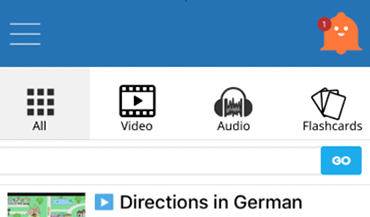

Welcome to my UX Research and
Design Portfolio!
Jump to:
About Me
Growing up experiencing the advancement of the internet and watching social media explode, I am curious about the UX problems faced in our increasingly digital society and learning more about how technology can be applied to help people live more productive and safe lives.
Additionally, as a Chinese Canadian who has studied abroad and loves to travel, I always find it interesting to see how cultural and linguistic factors play a role in shaping design.
I believe in using a systematic and empathetic approach to tackle design problems and hope this portfolio showcases my dedication to learning about UX.
For any inquiries, please reach me via LinkedIn or email.
Thank you for visiting!
My Work
User Research Projects
Perception of Mobile Emergency Alert Sounds
A HCI lab study run to determine how the audio tone selected for Canada's mobile emergency alerts could be improved based on statistical differences (ANOVA) in perceived annoyance, urgency, affect and reaction times.
Night Pedestrian Cognitive Task Analysis
A majority of pedestrian accidents worldwide occur at night. Here is a cognitive task analysis (CTA) performed to generate actionable recommendations to improve night pedestrian safety.
Smart Parking User Research Portfolio
An application of various user research techniques to understand the pain points in today's parking systems and the potential benefits of smart parking systems for users.
The Relationship Between Accessibility and Usability
A literature review examining the definitions, testing methods and best practices for Web accessibility and usability and the relationship between them.
Design Projects

Twitter Sentiment Analysis Tool
Have you ever wondered how everyone on Twitter feels about a certain topic? This project presents the design of a web-based Twitter sentiment analysis tool which uses NLP techniques to extract public opinion from Tweets matching a user query.
MOVO | Accessible Violin Design
MOVO is an expressive and accessible digital violin that can be played with one arm.
Mental Health Resource Recommender
Beacon Health is a web widget for post-secondary institution websites that can provide post-secondary students with accessible mental health resources during their time of need.

Language Learning UI
Learning a new language can be tough. Applying user research and different design refinement techniques, this project designs a new language learning UI that can keep learners motivated.
Other Work

Child's Play
A scrolling RPG produced by the 7 Seven Deadly Sins for the Games Institute Jam hosted in 2014.
Photos & Ink
Amateur photos and calligraphy pieces.
Note: Still under construction! Please visit again later.